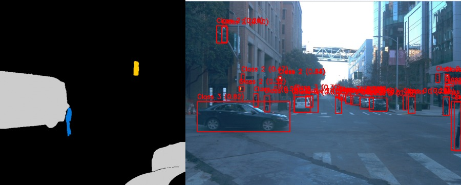
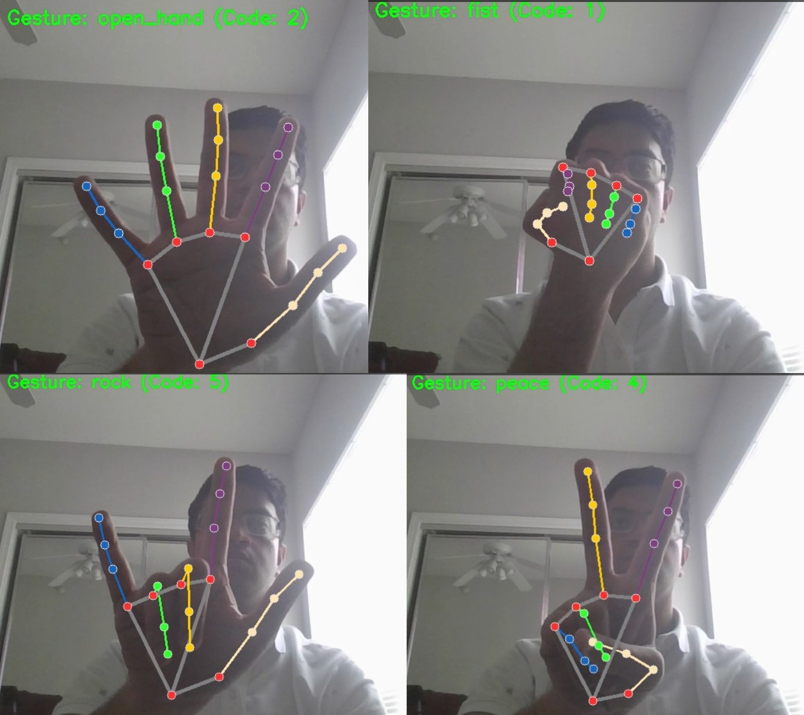
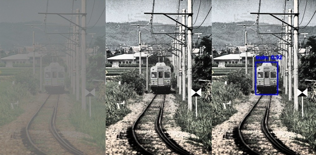
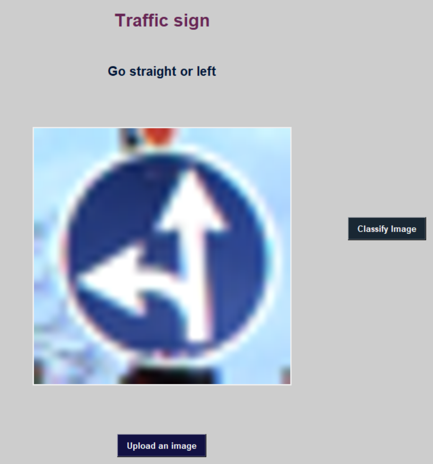
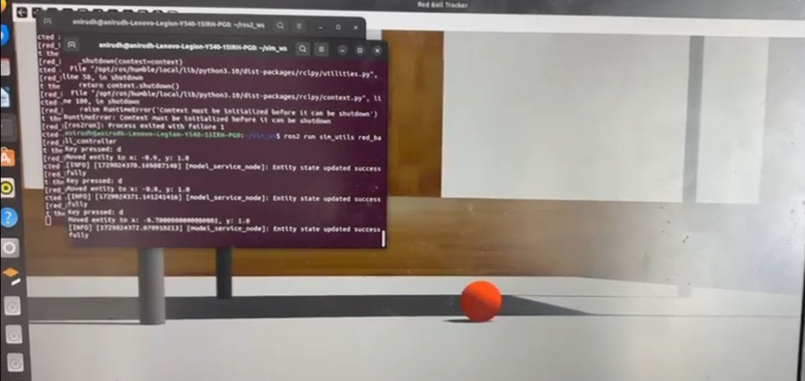
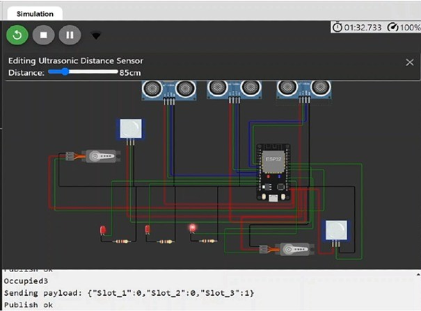

ANIRUDH RAGHAVAN
Computer Vision · Machine Learning · Robotics
MS in Autonomy · Purdue University
Computer Vision · Machine Learning · Robotics
MS in Autonomy · Purdue University
I'm Anirudh, a Master's student in Autonomy at Purdue University with a focus on computer vision, machine learning, and robotics. My work spans autonomous driving perception, intelligent systems, and real-time processing, with an emphasis on building systems that are reliable, not just accurate.
I moved to West Lafayette from Chennai, India in 2024, and these past two years have been the most technically intense and personally rewarding of my life so far.
Most of my work revolves around one question: how do we make perception systems that actually work outside the lab? That's led me deep into object detection, video segmentation, and model benchmarking, not just training models, but understanding why they fail and what it takes to make them reliable in real driving conditions.
As a Graduate Researcher at Purdue's College of Engineering, I built a benchmarking framework from scratch to compare modern YOLO variants against Autoware's production detector on the Waymo Open Dataset. The fine-tuned YOLOv8 model achieved 0.65 mAP and 0.86 pedestrian recall, outperforming the Autoware baseline by 20%. More than the numbers, building the ROS2 pipeline and annotation conversion system taught me how much engineering goes into making two systems even speak the same language.
Before Purdue, I studied Electronics and Communication Engineering at VIT, which is where I first got obsessed with the gap between hardware and intelligence. That systems-level thinking still shapes how I approach problems today.
Outside of research, I work part-time as a barista at Starbucks. Balancing that with graduate coursework has kept me sharp on time management and working well under pressure.
I'm actively looking for full-time roles in computer vision, ML engineering, or autonomous systems starting July 2026. Open to remote and willing to relocate.
Purdue University, West Lafayette, IN, USA
Coursework in Deep Learning for Computer Vision, Embedded Systems, Autonomous Systems, Artificial Intelligence.
Vellore Institute of Technology, Chennai, India
Coursework in - Robotics and Automation, Microcontroller and its Applications, Machine Learning Fundamentals, Control Systems, Embedded System Design, IoT Fundamentals, IoT Domain Analyst, Sensors and Instrumentation
Purdue University, West Lafayette, IN, USA
SmartInternz, Hyderabad, India







Design of Rubble Analyzer Probe Using ML for Earthquake
Designed an earthquake rubble analyzer probe using TinyML and CNN to detect human presence through sounds like "help," breathing, and coughing with 89.83% accuracy. Monitors real-time environmental parameters (temperature, humidity, pressure, air quality) to improve victim detection in post-earthquake rescue operations.
Enhancing Earthquake Response with AI: Real-Time Human Detection Using Deep Learning and Robotic Systems
Developed an AI-powered earthquake rescue system using YOLOv8 for victim detection under rubble, achieving 93.1% mAP. Deployed on edge hardware for near real-time inference and cloud-based alerting, enabling faster and more reliable disaster response.
Let’s connect to discuss opportunities in Computer Vision, Robotics, Machine Learning, and Autonomous Systems
Quick Info: